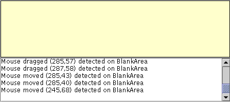

Feedback Form
|
|
Start of Tutorial > Start of Trail > Start of Lesson |
Search
Feedback Form |
Mouse-motion events tell you when the user uses the mouse (or a similar input device) to move the onscreen cursor. For information on listening for other kinds of mouse events, such as clicks, see How to Write a Mouse Listener. For information on listening for mouse-wheel events, see How to Write a Mouse Wheel Listener. If your program needs to detect both mouse events and mouse-motion events, you can use Swing's convenientMouseInputAdapterclass, which implements bothMouseListenerandMouseMotionListener.The following demo contains a mouse-motion listener. It's exactly like the example in How to Write a Mouse Listener, except for substituting
MouseMotionListenerforMouseListener, implementing themouseDraggedandmouseMovedmethods instead of the mouse listener methods, and displaying coordinates instead of numbers of clicks.
 [PENDING: Updated screenshot with sample output forthcoming.]
Here is the code from MouseMotionEventDemo.java that implements the mouse-motion event handling:
Try this:
- Run MouseMotionEventDemo using JavaTM Web Start. Or, to compile and run the example yourself, consult the example index.
- Move the cursor into the yellow rectangle at the top of the window.
You'll see one or more mouse-moved events.- Press and hold the mouse button, and then move the mouse so that the cursor is outside the yellow rectangle.
You'll see mouse-dragged events.public class MouseMotionEventDemo extends JPanel implements MouseMotionListener { //...in initialization code: //Register for mouse events on blankArea and panel. blankArea.addMouseMotionListener(this); addMouseMotionListener(this); ... } public void mouseMoved(MouseEvent e) { saySomething("Mouse moved", e); } public void mouseDragged(MouseEvent e) { saySomething("Mouse dragged", e); } void saySomething(String eventDescription, MouseEvent e) { textArea.append(eventDescription + " (" + e.getX() + "," + e.getY() + ")" + " detected on " + e.getComponent().getClass().getName() + newline); } }A more interesting example is
SelectionDemo, which is discussed in Introduction to Painting Concepts. The program draws a rectangle illustrating the user's current dragging. To do this, it must implement an event handler for three kinds of mouse events: mouse presses, mouse drags, and mouse releases. To be informed of all these events, the handler must implement both the
MouseListenerandMouseMotionListenerinterfaces, and be registered as both a mouse listener and a mouse-motion listener. To avoid having to define empty methods, the handler doesn't implement either listener interface directly. Instead, it extendsMouseInputAdapter, as the following code snippet shows.[PENDING: When this example has been updated, check the code.]
...//where initialization occurs: MyListener myListener = new MyListener(); addMouseListener(myListener); addMouseMotionListener(myListener); ... class MyListener extends MouseInputAdapter { public void mousePressed(MouseEvent e) { int x = e.getX(); int y = e.getY(); currentRect = new Rectangle(x, y, 0, 0); updateDrawableRect(getWidth(), getHeight()); repaint(); } public void mouseDragged(MouseEvent e) { updateSize(e); } public void mouseReleased(MouseEvent e) { updateSize(e); } void updateSize(MouseEvent e) { int x = e.getX(); int y = e.getY(); ... repaint(...); } }
The MouseMotionListener Interface
The corresponding adapter class is
MouseMotionAdapter.
Method Purpose mouseDragged(MouseEvent)Called in response to the user moving the mouse while holding a mouse button down. This event is fired by the component that fired the most recent mouse-pressed event, even if the cursor is no longer over that component. mouseMoved(MouseEvent)Called in response to the user moving the mouse with no mouse buttons pressed. This event is fired by the component that's currently under the cursor. Each mouse-motion event method has a single parameter — and it's not called
MouseMotionEvent! Instead, each mouse-motion event method uses aMouseEventargument. See The MouseEvent API for information about usingMouseEventobjects.
The following table lists the examples that use mouse-motion listeners.
Example Where Described Notes MouseMotionEventDemoThis section Reports all mouse motion events that occur within a blank panel to demonstrate the circumstances under which mouse motion events are fired. LayeredPaneDemoand
LayeredPaneDemo2How to Use Layered Panes Moves an image of Duke around within a layered pane in response to mouse motion events. SelectionDemoIntroduction to Painting Concepts Lets the user drag a rectangle to select a portion of an image. Uses a subclass of MouseInputAdapterto listen to both mouse events and mouse-motion events.GlassPaneDemoHow to Use Root Panes Uses a subclass of MouseInputAdapterto listen to mouse events and mouse-motion events on the root pane's glass pane. Redispatches the events to underlying components.ScrollDemoHow to Use Scroll Panes The label subclass, ScrollablePicture, uses a mouse-motion listener to allow the user to scroll the picture even when the user drags outside the window.
|
|
Start of Tutorial > Start of Trail > Start of Lesson |
Search
Feedback Form |
Copyright 1995-2004 Sun Microsystems, Inc. All rights reserved.